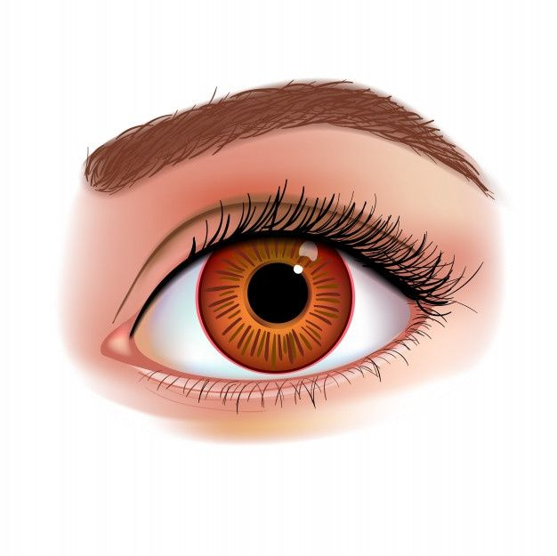
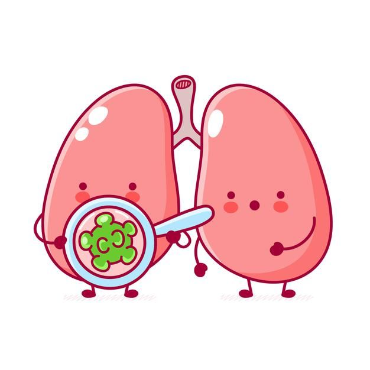
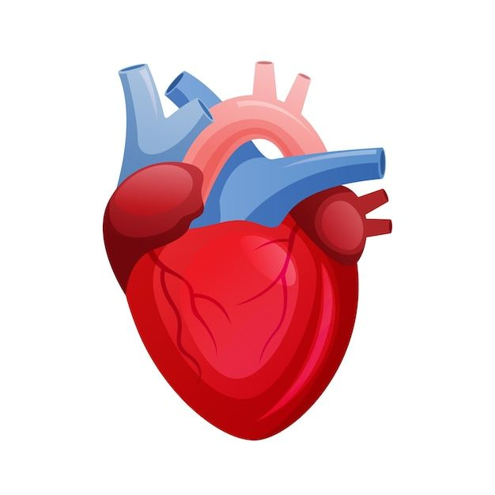
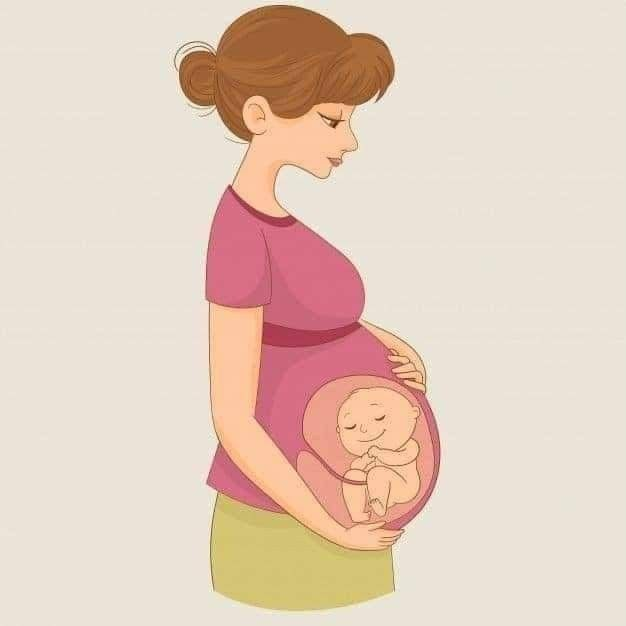
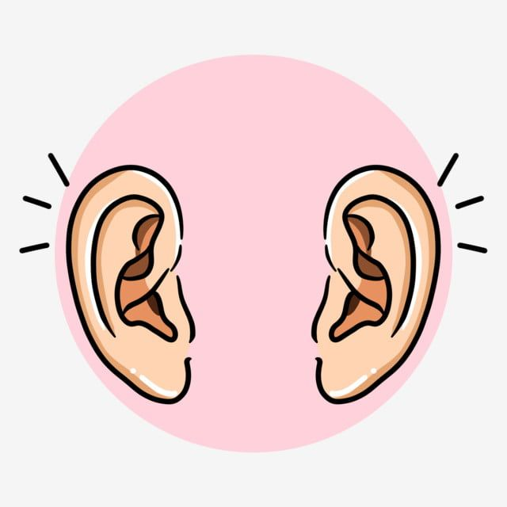

POLI MATA

Memberikan pelayanan mata secara menyeluruh kepada masyarakat
secara nyaman dan terpercaya, yang meliputi aspek preventif, kuratif,
promotif dan rehabilitatif bedah maupun non bedah.
POLI BAYI
Memberikan payanan pemeriksaan dan pengobatan terhadap bayi dan anak
sakit langsung oleh Dokter Spesialis Anak yang berkompeten di bidangnya.
POLI PARU DAN TB - RO

Melayani masyarakat yang membutuhkan pelayanan Kesehatan TBC RO/MDR TBC yang di
tangani oleh dokter – dokter spesialis yang sudah berpengalaman
POLI JANTUNG DAN PEMBULUH DARAH

Menangani hal-hal yang berkaitan dengan jantung dan pembuluh darah, atau kardiovaskuler, berikut pencegahan, diagnosis, dan pengobatan berbagai penyakit kardiovaskular.
POLI KEBIDANAN DAN KANDUNGAN

Poliklinik yang melayani pasien berhubungan dengan kehamilan dan penyakit kandungan serta didukung beberapa dokter spesialis kebidanan dan penyakit kandungan..
POLI
THT - KL

Poliklinik yang menangani dan melayani pemeriksaan telinga/hidung/tenggorok, ditangani oleh dokter spesialis yang berpengalaman di bidangnya.